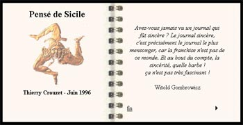

J’existe en ligne depuis 1996

En
racontant sa vie sur le Web, François Bon m’a donné l’idée de
creuser dans mon passé Web. J’ai retrouvé le premier texte que j’ai
publié, déjà sous la forme d’un livre électronique, un carnet de voyage en
Sicile. HTML garanti vintage, initialement publié chez Europe
Online dont à l’époque, avant la faillite de cette proto-startup,
j’étais l’administrateur français.
Suite | 2010 | Sommaire | Texte publié mercredi 17 février 2010